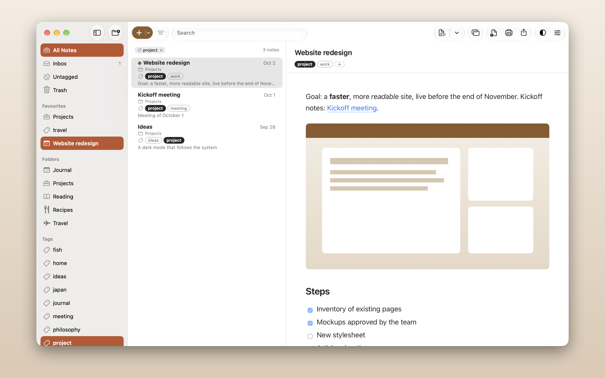
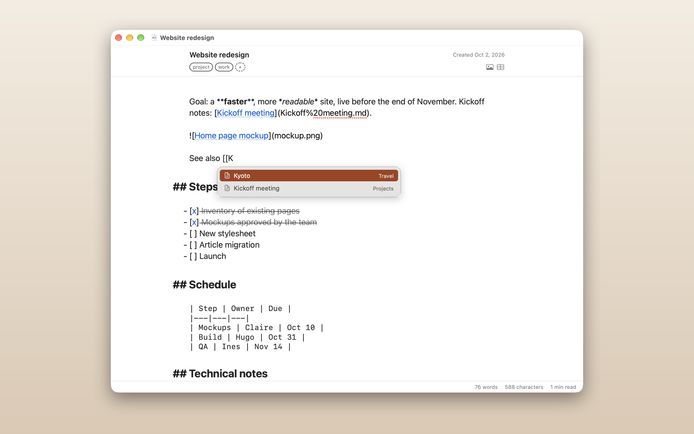
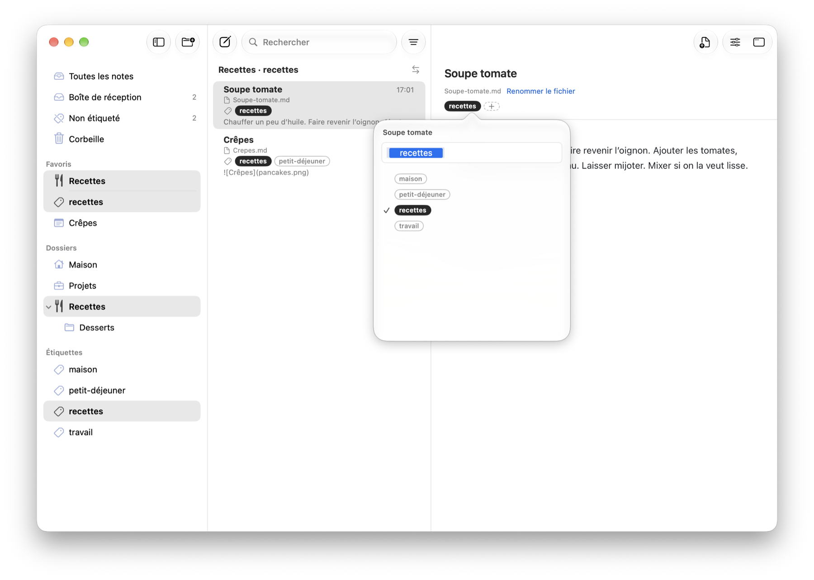
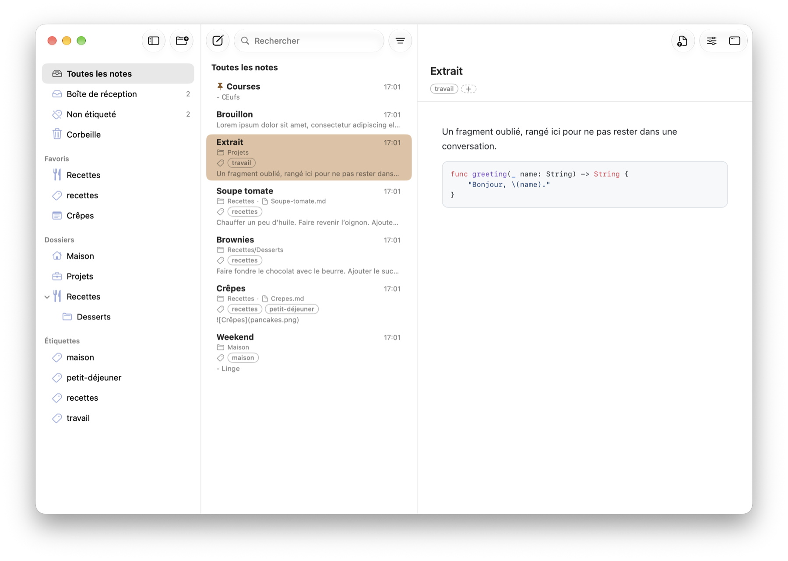
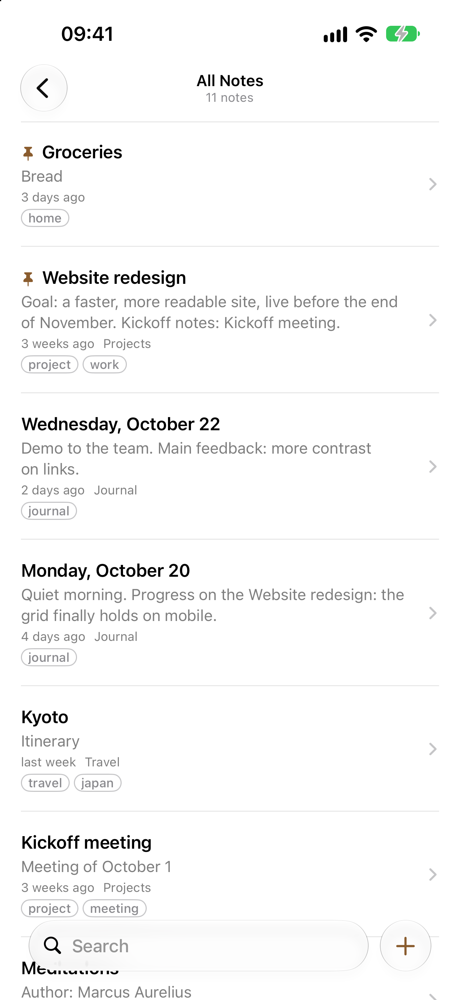
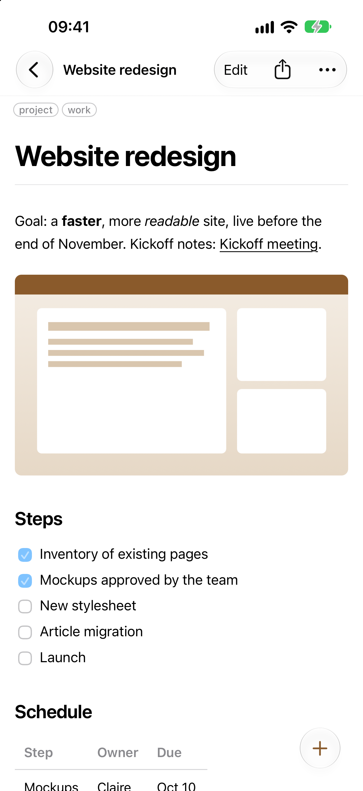
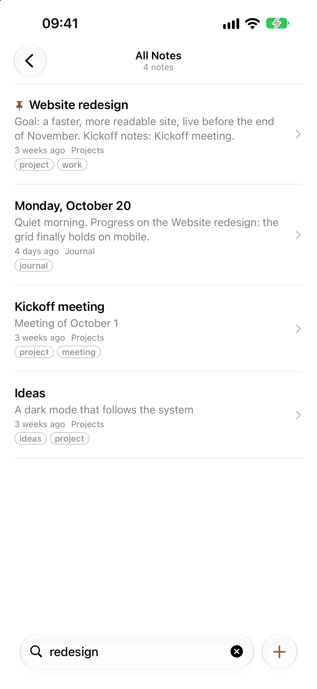

Dossier de presse
Tout ce qu’il faut pour parler de Shokonotes ou le montrer dans une vidéo. Servez-vous : rien ici n’exige de demander la permission.
Jean-Christophe Baptiste — shokonotes@jcbaptiste.com
Envie de l’essayer ? Demandez une licence gratuite : elle est sans condition et sans obligation d’en parler.
En une phrase
Shokonotes est une bibliothèque et un lecteur pour des notes Markdown conservées comme de simples fichiers dans un dossier de votre choix, pour Mac et iPhone, sans compte et sans abonnement.
Description courte
Vos notes sont des fichiers. Shokonotes les retrouve, les lit et permet de les écrire : une recherche plein texte qui répond pendant que vous tapez, des dossiers imbriqués, des étiquettes YAML qui les traversent, un aperçu GitHub Flavored Markdown soigné avec coloration syntaxique, et un petit éditeur intégré — ou celui que vous utilisez déjà. Rien n’est importé, rien n’est enfermé : supprimez l’app, vos notes sont toujours là.
Repères
- Plateformes : macOS 14 ou plus récent, iOS 17 ou plus récent. Un seul achat inclut l’app Mac et l’app iPhone.
- Sans compte, sans abonnement, sans télémétrie. L’app Mac ne demande aucun accès au réseau.
- De simples fichiers Markdown dans un dossier de votre choix ; la synchronisation est votre choix (iCloud Drive, Nextcloud, Syncthing, Git, ou rien). L’app iPhone ouvre les dossiers d’iCloud Drive.
- Une bibliothèque en lecture seule : parcourir, sélectionner et chercher ne vous mettent jamais en édition. On écrit dans une fenêtre à part.
- Éditeur : celui de Shokonotes, volontairement petit, ou le vôtre (Typora, VS Code, BBEdit, TextEdit…), choisi dans les Réglages.
- Capture instantanée : un raccourci global (⌃⌥⌘N par défaut) crée une note dans Inbox depuis n’importe quelle app, même fenêtre de Shokonotes fermée ou réduite ; sur iPhone, Partager ▸ Shokonotes enregistre une page web ou du texte.
- Langues : anglais, français, allemand, espagnol, italien, portugais (Brésil), russe, japonais, coréen, chinois simplifié.
- Auteur : Jean-Christophe Baptiste, développeur indépendant.
Ce qui le distingue
- Vos notes restent des fichiers, lisibles par n’importe quelle autre app, aujourd’hui comme dans dix ans.
- Lire et écrire sont séparés volontairement : pas de curseur égaré, pas de modification accidentelle.
- Privé par construction : aucun compte à créer, rien n’est envoyé nulle part.
- Une idée capturée en une touche depuis n’importe quelle app, sans ouvrir ni basculer vers la bibliothèque.
- Un achat unique, sans abonnement.
Liens
Icône
Pleine taille, carrée : le système applique lui-même le masque arrondi.
icon-1024.png (1024 × 1024)

Captures d’écran
Fichiers en pleine résolution.














Vous pouvez librement utiliser ces images et ces textes pour parler de Shokonotes. « Shokonotes » est le nom de l’app ; Apple, Mac, iPhone, iCloud et App Store sont des marques d’Apple Inc.